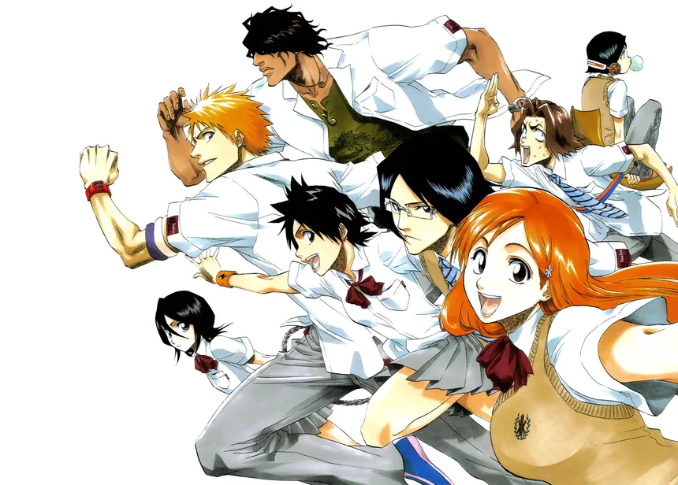
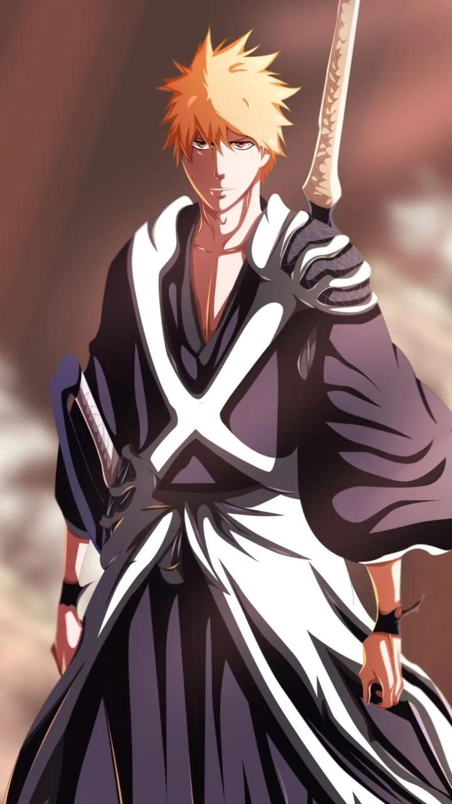

👻 Story Summary
Bleach follows Ichigo Kurosaki, who accidentally obtains the powers of a Soul Reaper from Rukia Kuchiki.
His job becomes:
Protecting humans
Defeating Hollows
Maintaining balance between the Human World, Soul Society, and Hueco Mundo
As the story progresses, Ichigo faces powerful enemies and learns shocking truths about his own powers.



⚔️ Major Arcs
1️⃣ Substitute Soul Reaper Arc
Introduction to Ichigo and Soul Reapers
2️⃣ Soul Society Arc ⭐ (Fan Favorite)
Rescue of Rukia
Epic battles & emotional moments
3️⃣ Arrancar / Hueco Mundo Arc
Fights against Aizen and the Espada
4️⃣ Fullbring Arc
Ichigo loses & regains powers
5️⃣ Thousand-Year Blood War Arc 🔥
Final arc
War between Soul Reapers and Quincy
Best animation
Dark tone
Heavy character deaths